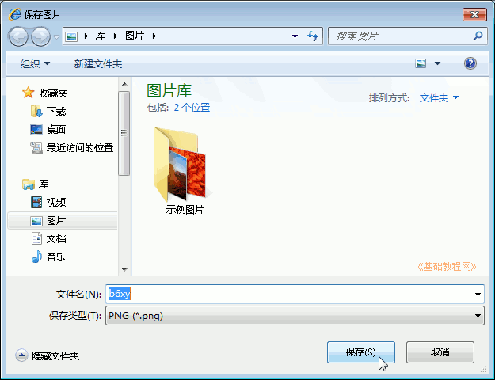
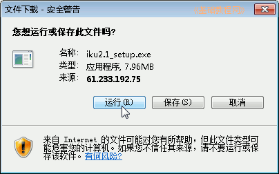

Windows7 基础入门教程
作者：TeliuTe 来源：基础教程网
三十、下载文件 返回目录 下一课网上好的文章、图片、音乐、视频、软件等可以下载到自己的计算机中，注意不要把病毒带下来；
1、下载文字
1）在网页中的文本可以选中后，点右键选“复制”；
2）然后打开记事本，选“粘贴”；
3）再点菜单“文件－保存”即可；
2、下载图片
1）在网页中的图片上点右键，选择“图片另存为”，
2）保存到自己的图片文件夹中即可；

3、下载音乐
1）在谷歌音乐(http://www.google.cn/music)或百度音乐中搜索音乐；
2）然后点歌曲后边的下载小按钮；
3）在出来的面板中点“下载”按钮；
4）在出来保存对话框中，点“保存”到自己的文件夹中；
4、下载视频
1）先进入视频网站打开视频，点播放器下边的“下载”，先要去下载视频网站中的下载工具；
2）找到下载工具，点“下载安装”按钮；
3）在出来的对话框中点“运行”，也可以先保存再运行；

4）待安装完成，再去视频那儿点“下载”，就可以下载视频了；
5、下载软件
1）在软件下载站点中，搜索软件；
2）在出来的软件列表中，点“下载地址”，注意细心别点错了；
3）在出来的下载地址列表中，选择自己所在地区的下载链接地址；
本节学习了下载文件的基础知识，如果你成功地完成了练习，请继续学习下一课内容；
本教程由86团学校TeliuTe制作|著作权所有
基础教程网：>http://teliute.org/
美丽的校园……
转载和引用本站内容，请保留版权信息和本站链接。